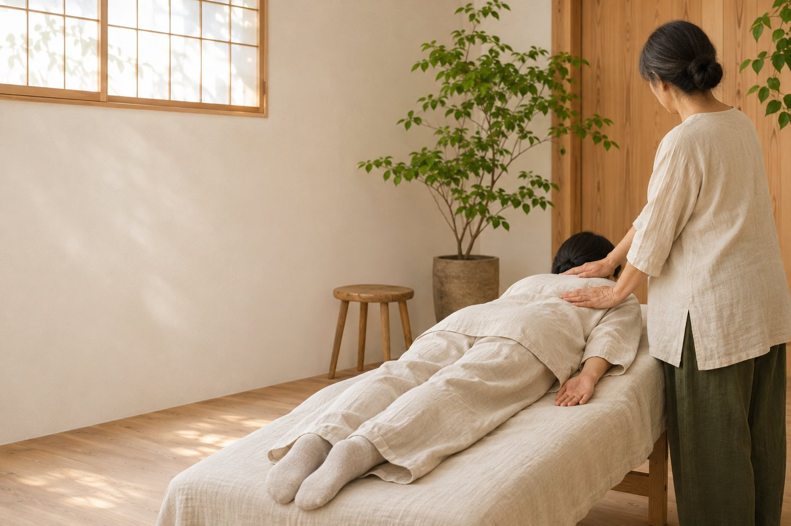
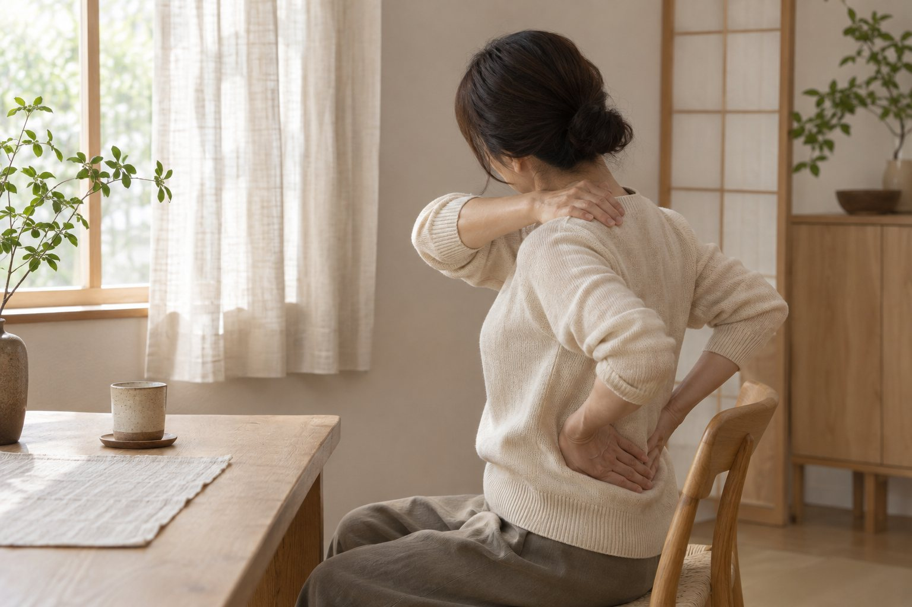
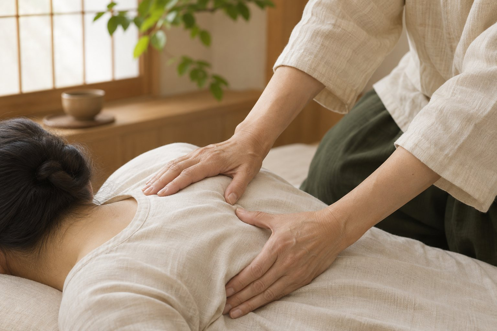
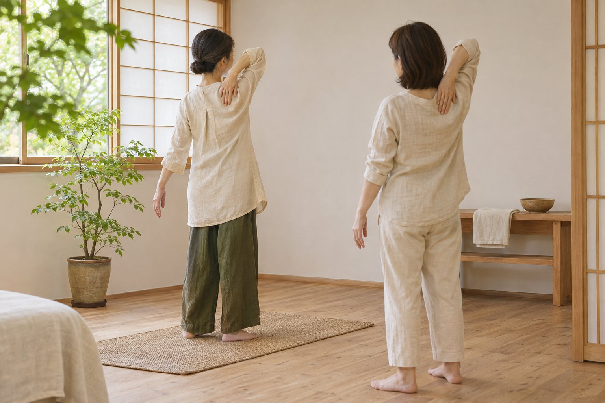
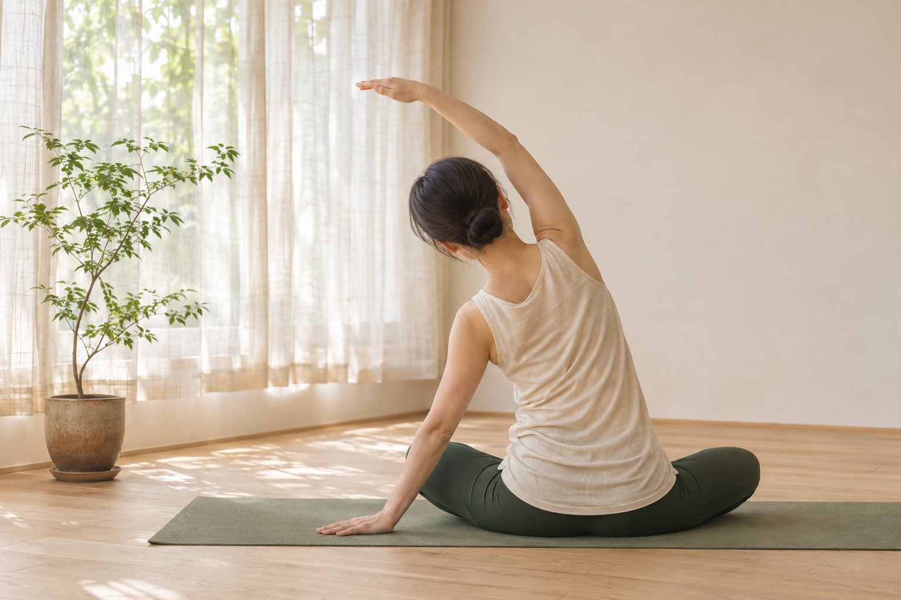
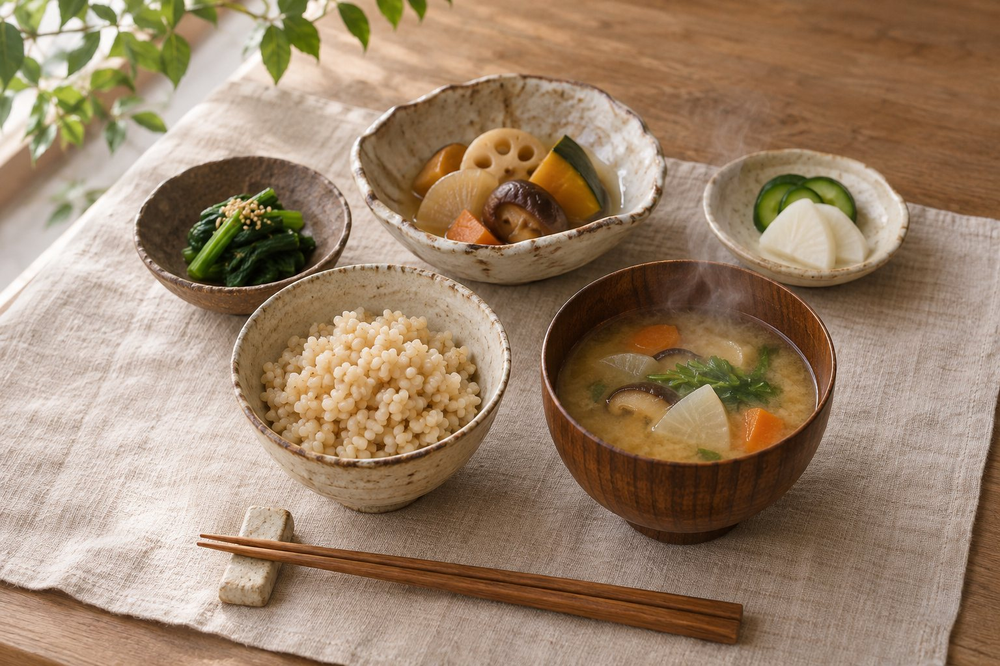
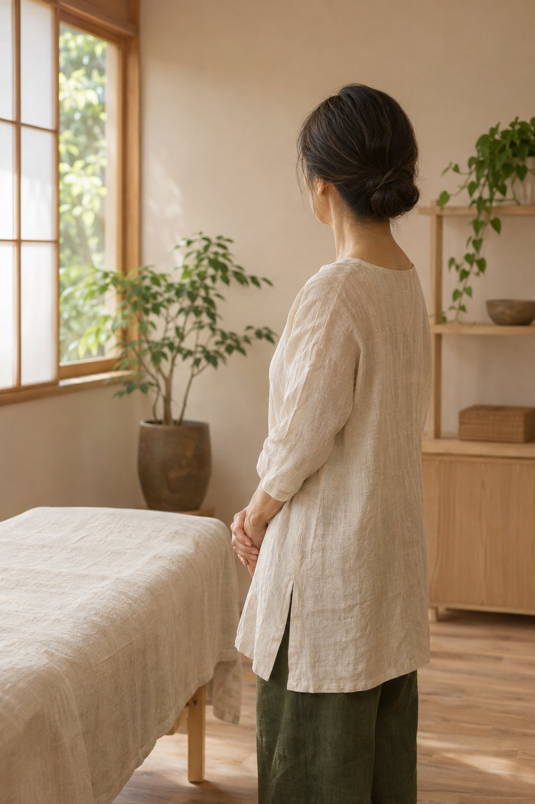

宮崎市阿波岐原町完全予約制
その場しのぎで、終わらせない。
整体 × セルフケア × ヨガ × 食養生。
本来持っている「健やかさを育てる力」を、引き出していくサロンです。
身体調整サロン結-YUI-

こんな繰り返しに、心当たりはありませんか
- ほぐしてもらった直後は楽なのに、数日でまた同じところがつらくなる。
- 痛みや不調が出るたびに、その場をしのぐ対処だけを続けている。
- 自分の身体を、家でどうケアすればよいのか分からない。
- 運動や食事も見直したいけれど、何から始めればよいか迷っている。
その場の楽さだけで終わらせず、整った状態を自分で育て、保っていけるように。
結-YUI-は、そのための道すじをご一緒に考えます。
整え、育て、維持する
四つを結ぶ、総合アプローチ
整体・セルフケア指導・ヨガ・食養生。お一人おひとりの状態に合わせて組み合わせる、オーダーメイドのサロンです。
- 整え身体のバランスを整える
- 育て健やかさを育てる力を引き出す
- 維持する整った状態を日々保つ
-

整体
いまの身体の状態に合わせて、手技でバランスを整えていきます。
-

セルフケア指導
ご自宅で続けられるケアの方法をお伝えし、整った状態を保つことをサポートします。
-

ヨガ
呼吸と動きを通して、ご自身で身体を育てていく時間です。
-

食養生
毎日の食事から、身体の内側を整える考え方をお伝えします。
選ばれる理由
-
01
小林矯体法をはじめ、学びを重ねた手技
日本自然療法 小林矯体法のライセンスを取得し、スイス支部として活動。タイ・ワットポー古式マッサージ、ジャパニーズリセットセラピー、天城流湯治法など、学びを重ねてきました。
-
02
ヨガ RYT500 の視点を合わせて
ハタヨガ USAアライアンス RYT500 を取得。整えるだけでなく、ご自身で動かし、育てるところまでを視野に入れています。
-
03
スイスで積んだ施術の経験
スイスに25年在住。2018年にローザンヌでサロンを開き、2024年に閉じるまで現地で活動してきました。
-
04
状態に合わせるオーダーメイド
整体・セルフケア指導・ヨガ・食養生を、決まった型ではなく、その方の状態に合わせて組み合わせます。
初回の流れ
初回は「総合コンディショニング（90分）」です。下記は一般的な流れの一例で、実際の内容・順序は状態により異なる場合があります。【要確認】
-
ご予約・お問い合わせ
完全予約制です。お問い合わせページからご連絡ください。
-
お話を伺う
気になっていることや、日々の過ごし方などをお聞きします。【要確認】
-
身体の状態を確認し、整える
状態に合わせて、整体でバランスを整えていきます。【要確認】
-
セルフケア・ヨガ・食養生のご提案
ご自宅で続けやすい方法を、状態に合わせてお伝えします。【要確認】
-
これからの進め方のご相談
2回目以降は「メンテナンス（60分）」でサポートします。
料金
| メニュー | 時間 | 料金（税込） |
|---|---|---|
| 初回総合コンディショニング | 90分 | 15,000円（税込） |
| 2回目以降メンテナンス | 60分 | 10,000円（税込） |
- 完全予約制です。
- お支払い方法：【要確認】
- キャンセル規定：【要確認】
セラピスト紹介

池辺 逸子itsuko ikebe
東京生まれ、埼玉・岩槻育ち。メーカー・金融業界を経て、シンガポール、シドニー、スイスに勤務・在住。スイス在住は25年（2000年 チューリッヒ、2008年 モントルー）。
タイ・ワットポー古式マッサージ
フットマッサージ
ジャパニーズリセットセラピー
ハタヨガ USAアライアンス RYT500 取得／ローザンヌにサロンを開く
日本自然療法 小林矯体法のライセンス取得、スイス支部として活動
ローザンヌのサロンを閉じ、日本へ移住
天城流湯治法の補取得／ハンマリング技術者認定
宮崎市阿波岐原町に 身体調整サロン結-YUI- オープン
よくあるご質問・アクセス・ご予約
予約はどのようにすればよいですか？
完全予約制です。お問い合わせページからご連絡ください。
整体・セルフケア指導・ヨガ・食養生は、すべて受けるのですか？
お一人おひとりの状態に合わせて組み合わせる、オーダーメイドでご提案します。
医療行為にあたりますか？
当サロンの施術は医療行為ではありません。通院中の方や体調に不安のある方は、事前に医師へご相談ください。
当日の服装や持ち物はありますか？
【要確認】ご予約の際にご案内します。
支払い方法とキャンセルについて教えてください。
お支払い方法：【要確認】／キャンセル規定：【要確認】
アクセス・店舗情報
- 店名
- 身体調整サロン結-YUI-
- 所在地
- 宮崎市阿波岐原町
番地など詳しい住所：【要確認】 - 営業時間
- 【要確認】
- 定休日
- 【要確認】
- 駐車場
- 【要確認】
- ご予約
- 完全予約制（お問い合わせページより）
LINE公式アカウント・予約フォーム：【要確認】